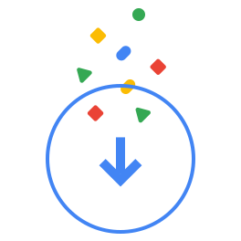

<!-- Copyright 2020 The Chromium Authors. All rights reserved.
     Use of this source code is governed by a BSD-style license that can be
     found in the LICENSE file. -->

<link rel="import" href="chrome://resources/html/polymer.html">

<link rel="import" href="chrome://resources/polymer/v1_0/iron-icon/iron-icon.html">
<link rel="import" href="chrome://resources/polymer/v1_0/paper-progress/paper-progress.html">
<link rel="import" href="chrome://resources/polymer/v1_0/paper-styles/color.html">

<link rel="import" href="/components/common_styles.html">
<link rel="import" href="/components/oobe_adaptive_dialog.html">
<link rel="import" href="/components/oobe_i18n_behavior.html">
<link rel="import" href="/components/oobe_dialog_host_behavior.html">

<!--
  UI for checking and downloading updates as part of the update process.
  'indeterminate' paper-progress will recalculate styles on every frame
  when OOBE is loaded (even when another screen is open).
  So we make it 'indeterminate' only when the checking for updates dialog is
  shown, and make set to false when dialog is hidden.

  Example:
      <checking-downloading-update> </checking-downloading-update>

  Attributes:
    'checkingForUpdate' - Whether the screen is currently checking for updates.
                          Shows the checking for updates dialog and hides the
                          downloading dialog.
    'progressValue' - Progress bar percent value.
    'estimatedTimeLeft' - Time left in seconds for the update to complete
                          download.
    'hasEstimate' - True if estimated time left is to be shown.
    'defaultProgressMessage' - Message showing either estimated time left or
                               default update status.
    'updateCompleted' - True if update is completed and probably manual action
                        is required.
    'cancelAllowed' - True if update cancellation is allowed.
    'checkingForUpdatesKey' - ID of localized string shown while checking for
                              updates.
    'downloadingUpdatesKey' - ID of localized string shown while update is being
                             downloaded.
    'cancelHintKey' - ID of the localized string for update cancellation
                      message.
-->

<dom-module id="checking-downloading-update">
  <template>
    <style include="oobe-dialog-host">
      .progress-message {
        color: var(--oobe-subheader-text-color);
        margin-top: 8px;
      }

      .update-illustration {
        height: 264px;
        width: 264px;
      }
    </style>
    <oobe-adaptive-dialog hidden="[[!checkingForUpdate]]"
        aria-live="polite" id="checking-for-updates-dialog" footer-shrinkable>
      <iron-icon slot="icon" icon="oobe-32:googleg"></iron-icon>
      <h1 slot="title">
        [[i18nDynamic(locale, 'checkingForUpdates')]]
      </h1>
      <div slot="subtitle" class="update-subtitle" id="checkingForUpdatesMsg">
        [[i18nDynamic(locale, checkingForUpdatesKey)]]
      </div>
      <div slot="subtitle" class="update-subtitle" hidden="[[!cancelAllowed]]"
          id="checkingForUpdateCancelHint">
        [[i18nDynamic(locale, cancelHintKey)]]
      </div>
      <paper-progress slot="progress" id="checking-progress"
          indeterminate="[[checkingForUpdate]]">
      </paper-progress>
      <div slot="content" class="flex layout vertical center-justified center">
        
      </div>
    </oobe-adaptive-dialog>

    <oobe-adaptive-dialog footer-shrinkable id="updating-dialog"
        hidden="[[isCheckingOrUpdateCompleted_(checkingForUpdate,
                                               updateCompleted)]]"
        aria-live="polite">
      <iron-icon slot="icon" icon="oobe-32:googleg"></iron-icon>
      <h1 slot="title">
        [[i18nDynamic(locale, 'updatingTitle')]]
      </h1>
      <div slot="subtitle">
        <div>[[i18nDynamic(locale, downloadingUpdatesKey)]]</div>
        <div hidden="[[!cancelAllowed]]">
          [[i18nDynamic(locale, cancelHintKey)]]
        </div>
        <div id="progress-message" class="progress-message">
          [[progressMessage_]]
        </div>
      </div>
      <paper-progress id="updating-progress" slot="progress" min="0" max="100"
          value="[[progressValue]]">
      </paper-progress>
      <div slot="content" class="flex layout vertical">
        <div class="flex layout vertical center-justified center">
          
        </div>
      </div>
    </oobe-adaptive-dialog>

    <oobe-adaptive-dialog footer-shrinkable id="update-complete-dialog"
        hidden="[[!updateCompleted]]" aria-live="polite">
      <iron-icon slot="icon" icon="oobe-32:googleg"></iron-icon>
      <h1 slot="title">
        [[i18nDynamic(locale, 'updateCompeletedMsg')]]
      </h1>
    </oobe-adaptive-dialog>

  </template>
</dom-module>
